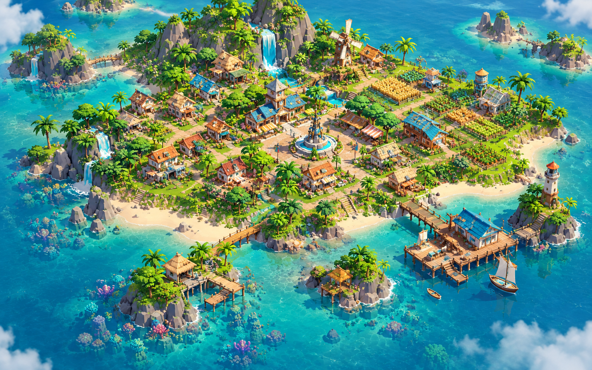
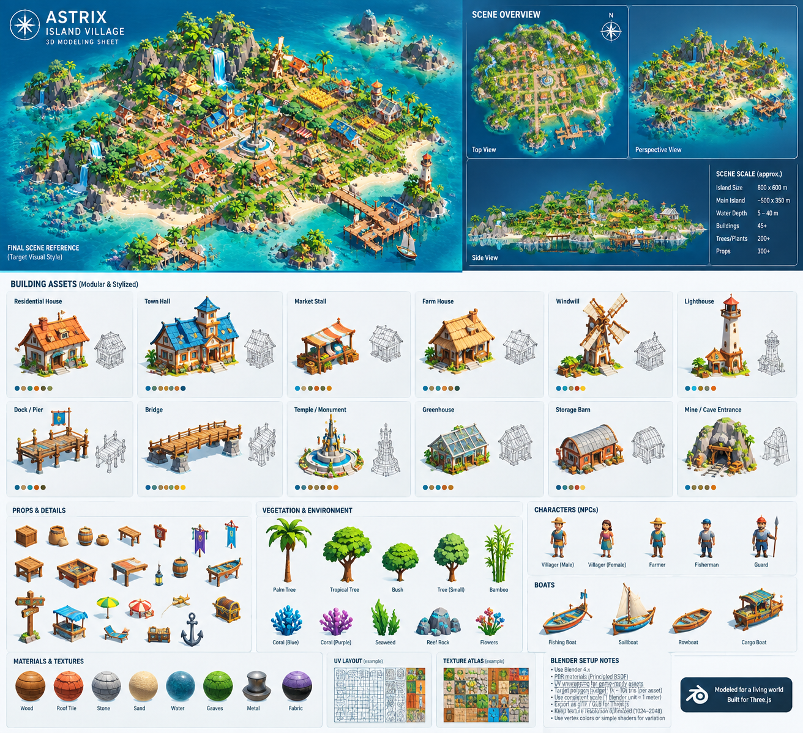
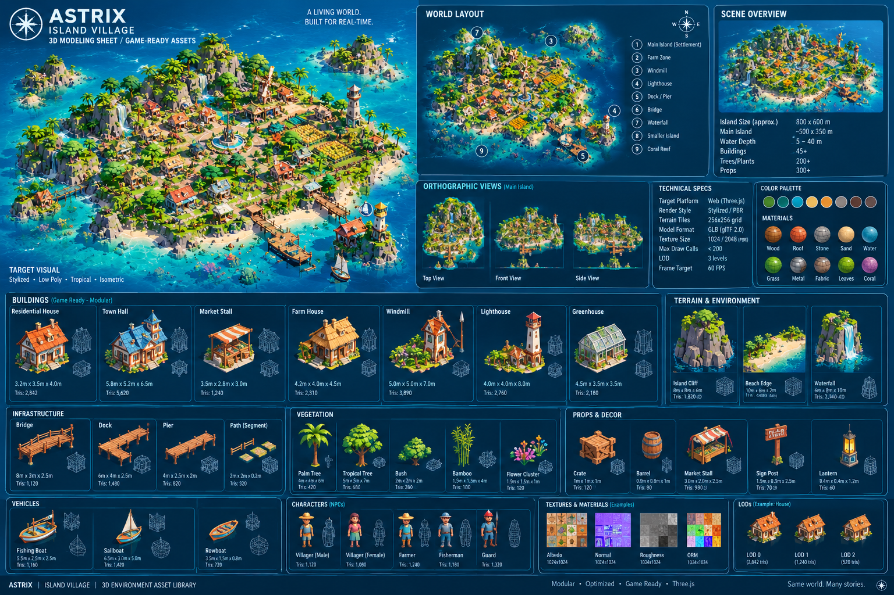

PRIMARY: Image 3 = Final Visual TargetSUPPORT: Image 1 = Dark Tech SheetSUPPORT: Image 2 = Light Asset SheetStyle: Stylized Low/Mid-Poly TropicalPlatform: Web Three.js 60 FPSFormat: GLB (glTF 2.0)
A LIVING WORLD. BUILT FOR REAL-TIME. Same world. Many stories.
REFERENCE PRIORITY — READ FIRST.Image 3 (hero isometric) is the PRIMARY visual target for the final Three.js world: dense tropical settlement, town-hall plaza with monument fountain, farms upper-right, windmill on ridge, lighthouse on SE rock, wooden docks/pier, waterfalls, beaches, coral reefs, turquoise water.
Images 1 + 2 are supporting vocabulary for asset construction: modular buildings, terrain modules, vegetation silhouettes, props, NPCs, boats, materials, ortho views, wireframe/construction language, Blender notes. Do NOT build one giant mesh. Build modular, instanced, game-ready assets and assemble the island from them.
1 — MASTER WORLD REFERENCE
Hero view + ortho views + terrain zones. All modeling must match this look while staying within browser budgets. Target: stylized low-poly/mid-poly, painterly, readable silhouettes, warm sun, turquoise water, no photorealism, no primitive-only placeholders.
HERO — FINAL SCENE REFERENCE (Image 3 — PRIMARY)

Island Size ~800×600 m (world units scaled to Three.js: 1 unit = 1 m)
Main Island ~500×350 m
Water Depth 5–40 m (visual only, no sim)
Buildings 45+
Trees/Plants 200+
Props 300+
Camera Isometric / elevated 45° yaw, ~38° pitch, ortho or low-FOV persp
ORTHO — TOP / FRONT / SIDE (from Images 1+2)

Use Image 2 top-view for plaza→farm axis, side-view for cliff/waterfall heights, perspective for density. Use Image 1 ortho strip for topology validation.
TECH MODELING SHEET (Image 1 — SUPPORT)

Follow its construction language: dimension lines, wireframe cage next to shaded view, tris + meters under each asset, material dots, LOD strip, texture swatches. Reproduce this layout discipline for every new asset.
Key Terrain Zones (label for placement — see §2)
Zone
Location on hero
Modeling note
Z1 Central settlement + plaza
Middle, around fountain monument
Flattened pad ~60×50 m, stone plaza disc, radial paths. Keep clear of scatter.
Z2 Residential ring
Around plaza, W + S
8–12 houses on 8–12 m lots, varied roof color/rotation, no identical neighbors.
Coordinates in meters, origin at plaza fountain (0,0). +X east, +Z south. Keep plaza→farm axis readable from default camera (upper-left key light).
Placement Table (tolerance ±10 m — compose, don't grid-snap)
Element
Approx. pos
Footprint
Central plaza + monument fountain
0,0
Ø 18 m stone disc
Town Hall (blue roof)
0,-28 (N of plaza)
9×8 m
Residential W cluster (4–5 houses)
-45…-20, -10…+25
lots 10 m
Residential S cluster (3–4 houses)
-15…+20, +28…+50
lots 10 m
Market row + Storage Barn
+35,+5
30×14 m strip
Farm belt (4–6 plots) + 2 Farm Houses
+70…+130, -60…-10
plots 12×8 m each
Greenhouse
+135,-15
7×5 m
Windmill (on ridge)
+55,-85
7×7 m, blades Ø 12 m
Water tower / lookout
+110,-55
Ø 4 m
Main dock + harbor house (SE)
+75,+95
dock 30×10 m
Lighthouse rock
+125,+80
islet Ø 22 m, tower h 12 m
Footbridge to lighthouse
+100,+88
span ~24 m
SW fishing hut islet + pier
-60,+110
islet Ø 26 m
S reef / coral gardens
-10…+40,+130
60×25 m shallow
N waterfall cliff
-10,-110
cliff 40 w × 25 h m
W twin falls + beach cove
-110,+20
beach 40 m arc
Paths
plaza radial N/E/S/W + farm lane + harbor descent
2 m wide, thin-box decals
Composition Rules
1 landmark per view: plaza spire from S, windmill from N, lighthouse from E. Never cluster all three.
Foreground corridor: keep S slope (camera side) low — bushes/tufts/rocks only, no tall trees blocking plaza.
Tall vegetation: interiors + N/W rims. Palms on beaches, broadleaf inland, bamboo near water.
Water reads as water: boats in frame, foam at shore (shader or geo band), cliffs continue 5 m below waterline, seabed plane at -6 m, wet dark band at waterline.
Food story forward: farms face default camera; granary/stacks near market, visible gold accent.
Noxisolation: every building gets path + 1–2 props + 1 lantern + vegetation neighbor.
Path Network
Path = 2 m wide segments (straight / curve 45° / T / plaza ring). Y-offset +0.06 m thin boxes (never coplanar quads). Sandy #E8CF9A with stone edging. Stairs where slope > 20°.
MODULAR ASSEMBLY: terrain = tiled base (16–32 m tiles) + cliff kit + beach kit + islet kit. Never one monolithic island mesh — enables frustum culling + LOD + reuse.
3 — BUILDING ASSET SHEET (8 modular assets)
Each asset: shaded front + side + ¾ + wireframe cage. Origin at ground center. Units meters. All quads→tris, apply transforms before export. Shared atlas (§12).
A. Residential House
Size 5.0×4.2×4.5 m
Tris LOD0 2,842
Tex 1024 atlas
Modules: base walls, gable roof (2 slabs + ridge cap + eaves), chimney + smoke anchor, door + 2 windows + shutters, porch posts, foundation skirt.
Perf: one glass draw call for whole building; no per-pane materials.
LOD: LOD1 1,000 (opaque glass) / LOD2 380.
H. Storage Barn / Granary
Size 8×5×4.5 m
Tris LOD0 2,400
Tex 1024
Modules: arched metal roof, timber gables, big doors, open side platform with grain-stack anchors (food readable from camera — never hide stock inside).
LOD: LOD1 1,150 / LOD2 450.
MODELING DISCIPLINE (all buildings): bottom-anchored pivots, manifold geometry, no N-gons on deforming parts, bevel only silhouette edges, separate material IDs per region (wall/roof/timber/glass), keep UV islands on shared atlas, snow-cap child meshes named SnowCap_* for seasonal toggle.
4 — INFRASTRUCTURE (modular repeat kit)
Build once, instance everywhere. All timber = shared wood material. All pivots bottom-center. Snap dimensions to 1 m / 0.5 m grid.
Wooden Bridge
Module 4×3×1 m, 1,120 tris. Deck planks (instanced), 2 stringers, stone abutments, post+rail both sides. Repeat spans + end ramps. Slight arch (0.15 m camber).
Dock (T-head)
6×4×1 m, 1,480 tris. Piles (Ø0.25 m, 2 m into water), deck, cleats, lantern post, flag anchor. Pile tops above deck 0.4 m.
Pier (straight)
4×2.5×1 m, 620 tris. Same kit as dock, shorter. Chain instances for 20–30 m harbor arm.
Path Segment
2×2×0.12 m, 320 tris. Straight / curve45 / T / plaza-ring variants. Sandy top + stone edge. +0.06 m lift, real thickness.
Stairs + Platform + Railing
Stair: 2 m wide, step 0.3 tread / 0.18 riser, side stringers. Platform: 2×2 m hut decks, stilt legs. Railing: 1 m post + double rail, instanced posts.
Shoreline Structures
Breakwater rocks (terrain kit), mooring posts, rope coils (torus stack), fish-drying racks. Wet band material on all parts below +0.5 m.
Repeat Logic
Bridge = [ramp][span]×N[ramp]. Dock = [pier]×N + [T-head]. Paths snap vertex-to-vertex. Name: ASTX_INFRA_BridgeSpan_4m etc. One material → one draw call per type when instanced.
5 — TERRAIN (modular composition — no monolith)
Main Island Tile
16×16 m tiles, ~1,800 tris each. Grass cap + soil band + stone cliff + submerged plinth (to -5 m). Vertex-color blend grass→sand→rock. Skirt edges to hide seams.
Rocky Cliff
8×8×6 m, 1,320 tris. Angular low-poly faces, top grass lip, ledges for plants. 3 variants rotated/mirrored.
5 sizes (0.5–3 m), 120–500 tris. Dark wet variant for waterline. Scatter + rim armor + breakwaters.
6 — VEGETATION (silhouette variation, instanced)
Do NOT make every tree identical. 3 palm lean variants, 3 broadleaf crowns, 2 bushes. Wind sway via shader (vertex color green channel = sway weight) or static + Three.js rotation for palms only.
INSTANCING: palms/bushes/grass/reef = InstancedMesh in Three.js. One geometry + one material per species. LOD1 = billboard cross-plane at >80 m, LOD2 = hide grass/flowers.
7 — PROPS & DECOR (storytelling at 40+ px)
Rule from renders: anything that must be identified at diorama zoom must be person-sized (~2 m) or clustered. 8 px props are invisible — scale up or group.
Storage
Crate 1×1×1 m 120 tris; Barrel Ø0.8×1 m 300 tris; Sack (tapered + tie) 0.7 m; Chest (lid separate object for open anim) 350 tris. Grain-stack = cream tapered stack 2.2 m tall (NOT gold — must differ from wheat).
Market & Furniture
Table 2×1 m, Bench, Market Table with goods, Stall rug. Timber + fabric mats. Legs as separate instances.
8 — CHARACTERS (stylized NPCs — readable from above)
No facial detail — silhouette + color role-coding only. Height ~1.7 m (slightly heroic 1.9 with hat). Rig: hip pivot, 2 legs, torso, 2 arms, head. One 1024 atlas for all NPCs. ~1,100–1,300 tris each.
NPC
Tris
Read
Accessory (separate object)
Villager Male
1,120
straw hat + blue shirt
basket
Villager Female
1,080
red top + teal skirt
pot / child hand variant
Farmer
1,240
tan hat + green shirt
hoe
Fisherman
1,180
blue cap + grey shirt
rod + creel
Guard
1,320
red helmet + spear
spear + shield
Animation (Three.js): 3 clips — idle (breath), walk (leg/arm swing), work (bend). Share skeleton across all NPCs. Export as separate GLBs per role, same rig names.
Wide hull, canopy frame + fabric top, crate cargo (instanced), lanterns. Moored at dock E side.
WATER SIGNAL: at least 2 boats visible in default frame (1 moored at dock, 1 mid-channel). Scale boats UP 10–15% over true scale — at diorama zoom small boats vanish. Bob anim in Three.js (sine y + roll), not baked.
10 — MATERIAL LIBRARY (match the refs — painterly PBR)
Stylized PBR: high saturation albedo, low-frequency detail, roughness 0.6–0.9 (no mirror), no metalness except true metal. Flat + hand-painted grain via atlas, not procedural noise.
Coral / Flowers#FF6EC7 · emissive .1 · accent only
11 — COLOR PALETTE (coherent — no random hues)
Ocean deep#0A5A8A
Shallow#1E9EC0
Foam#E8FBFF
Sand#E8CF9A
Grass#5FBF5A
Foliage dark#2E7D3A
Wood#8A5A33
Timber dark#5B3418
Soil (NOT timber)#5B3418 — must differ from wood
Roof orange#C96F2E
Roof blue#2E7FC9
Stone#9A9AA0
Flower pink#FF6EC7
Harvest gold#FFB02E (only emissive accent)
Coral purple#9B5DE5
Light: warm key sun (upper-left, 48°, #FFF1D6, shadows ON) + sky fill (cool #BFE3FF, no shadow). Taxonomy: terracotta = built, green = alive, gold = harvest-ready, grey = stone, blue = water. Violet reserved for exotic/coral only.
12 — TEXTURE / UV GUIDANCE (atlas-first)
Atlas Strategy
1 shared 2048 atlas for buildings (walls/roofs/timber/stone), 1×1024 for vegetation, 1×1024 for props/NPCs, 1×512 for boats. Max 4–5 textures for whole island.
Texel density: 128 px/m (±20%). 1 m wall = 128 px. Small props may drop to 64 px/m.
UV: 0–1 per atlas, 4 px padding, no overlaps except mirrored/tiled parts. Hard edges → split UVs. Lightmap UV channel 2 if baked AO.
Maps: Albedo (sRGB) + Normal (tangent, soft — no harsh cracks) + Roughness (packed G) + AO (baked vertex or texture, multiply). No metalness map except metal parts (uniform value).
Sizes & Compression
Use
Size
Town Hall / hero
2048
Houses/farm/windmill/light
1024 (shared atlas)
Props/NPC/boats
512–1024
Terrain tiles
1024 + vertex colors
Three.js: KTX2/Basis + mipmaps, anisotropy 4, sRGB albedo. One material per atlas — never per-asset duplicates.
13 — LOD STRATEGY (Three.js + glTF suitable)
Level
Screen rule
Buildings
Vegetation
Props
LOD0 full
< 40 m
Full (2–6k tris) + interior goods
Full crown + fronds
Full + goods
LOD1 mid
40–100 m (default view)
~45% tris, drop bevels/shutters, merge small parts
Implement as THREE.LOD or glTF MSFT_lod. Share LOD1/LOD2 geometries across variants. Frustum culling per tile/asset — never merge island into one draw.
14 — BLENDER PRODUCTION NOTES (for AI modeling agent)